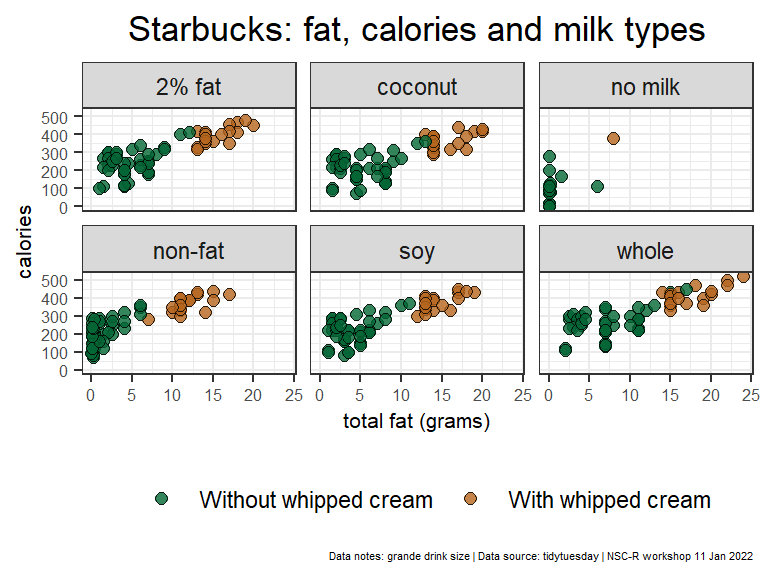
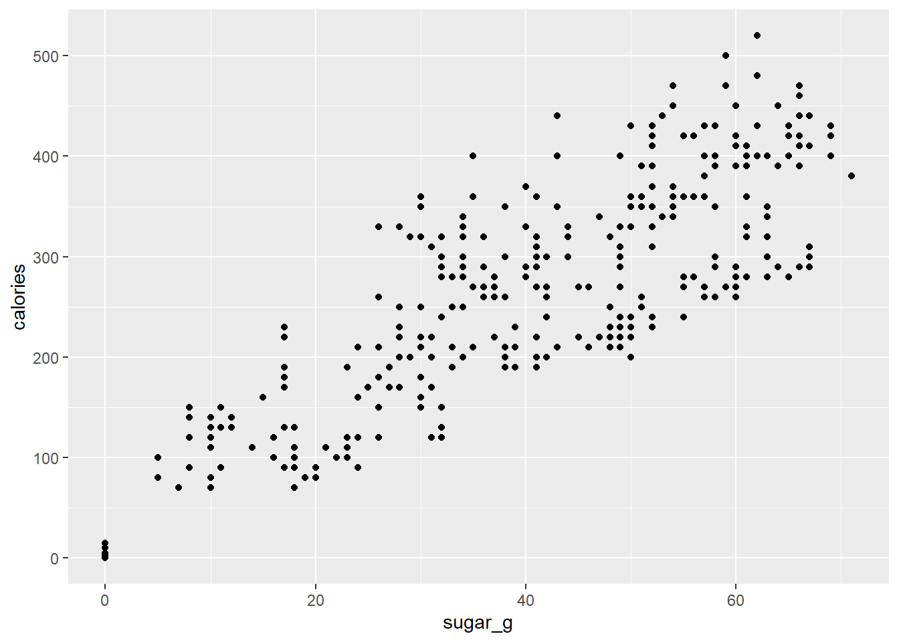
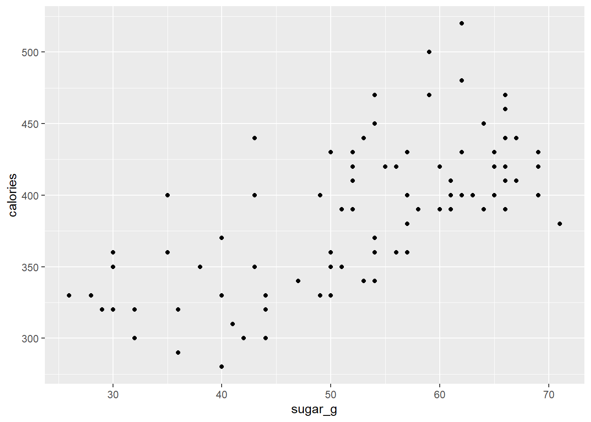
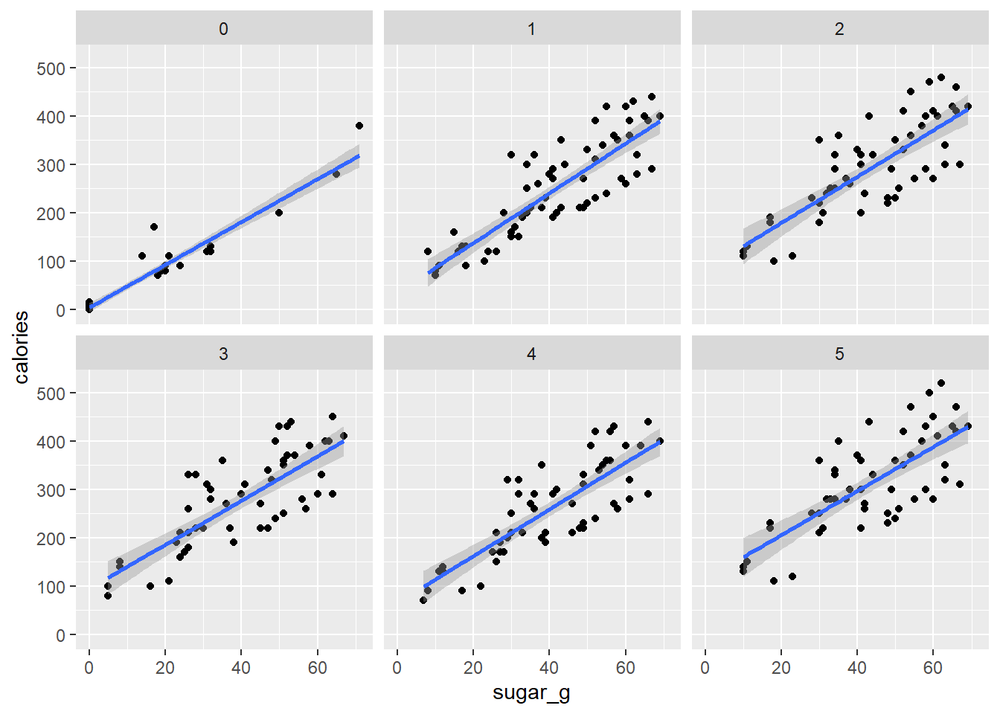
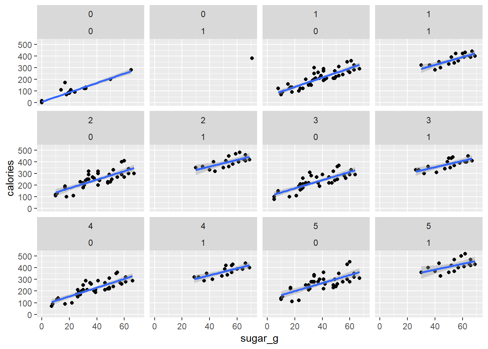
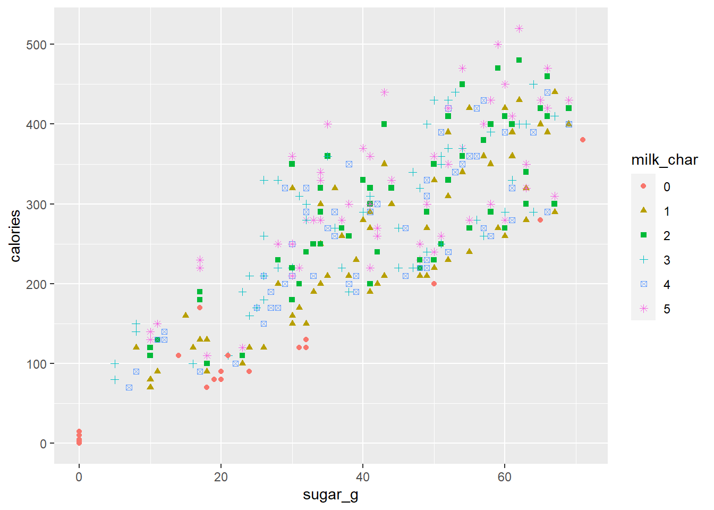

library(readr)
library(dplyr)
library(tidyr)
library(stringr)
library(ggplot2)2 Exploration and vizualization of Starbuck coffee use
NSC-R Tidy Tuesday workshop January 2022
2.1 Introduction
On 11 January 2022 and 25 January 2022 Sam Langton gave NSCR Tidy Tuesday presentations on the exploration and visualization of Starbuck coffee use data.In this document both presentations are combined.
[^1]. Here you can find it on the NSCR- website. Here is the First presentation. Here is the Second presentation
2.2 Load libraries.
3 Load data
The data are loaded directly from the TidyTuesday github page.
star_df <- read_csv('https://raw.githubusercontent.com/rfordatascience/tidytuesday/master/data/2021/2021-12-21/starbucks.csv')4 Initial explore.
Here are some explorative commands you can use:
- star-df opens the dataset and shows you the variables. - names(star_df)gives you the names of the 15 variables. - glimpse(star_df)shows you the number of rows (often particpants) and columns (often variables) and also informs you about the kind of variables. - dim(star_df) informs you about number of rows and columns.
- sum(is.na(star_df)) show you the number of missing variables.
star_df# A tibble: 1,147 x 15
product_n~1 size milk whip serv_~2 calor~3 total~4 satur~5 trans~6 chole~7
<chr> <chr> <dbl> <dbl> <dbl> <dbl> <dbl> <dbl> <chr> <dbl>
1 brewed cof~ short 0 0 236 3 0.1 0 0 0
2 brewed cof~ tall 0 0 354 4 0.1 0 0 0
3 brewed cof~ gran~ 0 0 473 5 0.1 0 0 0
4 brewed cof~ venti 0 0 591 5 0.1 0 0 0
5 brewed cof~ short 0 0 236 3 0.1 0 0 0
6 brewed cof~ tall 0 0 354 4 0.1 0 0 0
7 brewed cof~ gran~ 0 0 473 5 0.1 0 0 0
8 brewed cof~ venti 0 0 591 5 0.1 0 0 0
9 brewed cof~ short 0 0 236 3 0.1 0 0 0
10 brewed cof~ tall 0 0 354 4 0.1 0 0 0
# ... with 1,137 more rows, 5 more variables: sodium_mg <dbl>,
# total_carbs_g <dbl>, fiber_g <chr>, sugar_g <dbl>, caffeine_mg <dbl>, and
# abbreviated variable names 1: product_name, 2: serv_size_m_l, 3: calories,
# 4: total_fat_g, 5: saturated_fat_g, 6: trans_fat_g, 7: cholesterol_mgnames(star_df) [1] "product_name" "size" "milk" "whip"
[5] "serv_size_m_l" "calories" "total_fat_g" "saturated_fat_g"
[9] "trans_fat_g" "cholesterol_mg" "sodium_mg" "total_carbs_g"
[13] "fiber_g" "sugar_g" "caffeine_mg" glimpse(star_df)Rows: 1,147
Columns: 15
$ product_name <chr> "brewed coffee - dark roast", "brewed coffee - dark ro~
$ size <chr> "short", "tall", "grande", "venti", "short", "tall", "~
$ milk <dbl> 0, 0, 0, 0, 0, 0, 0, 0, 0, 0, 0, 0, 0, 0, 0, 0, 1, 2, ~
$ whip <dbl> 0, 0, 0, 0, 0, 0, 0, 0, 0, 0, 0, 0, 0, 0, 0, 0, 0, 0, ~
$ serv_size_m_l <dbl> 236, 354, 473, 591, 236, 354, 473, 591, 236, 354, 473,~
$ calories <dbl> 3, 4, 5, 5, 3, 4, 5, 5, 3, 4, 5, 5, 3, 4, 5, 5, 35, 50~
$ total_fat_g <dbl> 0.1, 0.1, 0.1, 0.1, 0.1, 0.1, 0.1, 0.1, 0.1, 0.1, 0.1,~
$ saturated_fat_g <dbl> 0.0, 0.0, 0.0, 0.0, 0.0, 0.0, 0.0, 0.0, 0.0, 0.0, 0.0,~
$ trans_fat_g <chr> "0", "0", "0", "0", "0", "0", "0", "0", "0", "0", "0",~
$ cholesterol_mg <dbl> 0, 0, 0, 0, 0, 0, 0, 0, 0, 0, 0, 0, 0, 0, 0, 0, 0, 10,~
$ sodium_mg <dbl> 5, 10, 10, 10, 5, 10, 10, 10, 5, 5, 5, 5, 5, 5, 5, 5, ~
$ total_carbs_g <dbl> 0, 0, 0, 0, 0, 0, 0, 0, 0, 0, 0, 0, 0, 0, 0, 0, 5, 5, ~
$ fiber_g <chr> "0", "0", "0", "0", "0", "0", "0", "0", "0", "0", "0",~
$ sugar_g <dbl> 0, 0, 0, 0, 0, 0, 0, 0, 0, 0, 0, 0, 0, 0, 0, 0, 5, 5, ~
$ caffeine_mg <dbl> 130, 193, 260, 340, 15, 20, 25, 30, 155, 235, 310, 410~dim(star_df)[1] 1147 15sum(is.na(star_df))[1] 05 Subset brewed coffee.
When you want to look at a specific subset with the product_name brewed coffee for example you can define this as:.
brew_df <- star_df %>%
filter(str_detect(product_name, "brewed coffee"))6 Quick clean for the plot.
- Make another subsample and call it
big_ones_df.
-Use only the variablesproduct_name,size,milk,whipandcalories-trans_fat_g).
- Use only when
sizeis grande. - change
whipinto a character variable. - Recode categories of
milkfrom 0, 1, 2, 3, 4 5 into no milk, non-fat, 2% fat, soy, coconut, whole.
big_ones_df <- star_df %>%
select(product_name, size, milk, whip, calories:trans_fat_g) %>%
filter(size == "grande") %>%
mutate(whip_char = as.character(whip),
milk_labs = recode(milk,
`0` = "no milk",
`1` = "non-fat",
`2` = "2% fat",
`3` = "soy",
`4` = "coconut",
`5` = "whole")) # These categories are on the tt git page.7 What in the relationship between calories and fat?
Can you plot between calories(y) and total_fat_g (x)? Show the diffence on whip_char'and show it for the sixmilk-labs` you recoded.
my_plot_gg <- ggplot(data = big_ones_df) +
geom_point(mapping = aes(x = total_fat_g, y = calories, fill = whip_char),
size = 2, alpha = 0.8, pch = 21, colour = "black") +
facet_wrap(~milk_labs) +
labs(title = "Starbucks: fat, calories and milk types",
caption = "Data notes: grande drink size | Data source: tidytuesday | NSC-R workshop 11 Jan 2022",
fill = NULL, x = "total fat (grams)") +
scale_fill_manual(values = c("#036635", "#b5651d"),
labels = c("Without whipped cream", "With whipped cream")) +
theme_bw() +
theme(legend.position = "bottom",
axis.text = element_text(size = 6),
axis.title = element_text(size = 8),
plot.title = element_text(hjust = 0.5),
plot.caption = element_text(size = 4))
my_plot_gg
8 Save.
Save the plot on your computer as a png-file. Here is place in a projectmap and a submap images which I made on my computer. Change the path if necessary for your computer.
ggsave(my_plot_gg, file = "images/starbucks_plot.png",
height = 12, width = 12, unit = "cm")9 Counting frequencies
For counting frequencies you always can use different methods. We show some of them.
This is the R base-way for counting the variable whipfor example.
table(star_df$whip)
0 1
864 283 This is the grouping-way.
star_df %>%
group_by(whip) %>%
tally() # A tibble: 2 x 2
whip n
<dbl> <int>
1 0 864
2 1 283This is a better way (thanks Wim!).
freq_df <- count(star_df, whip)
freq_df# A tibble: 2 x 2
whip n
<dbl> <int>
1 0 864
2 1 28310 Basic cleaning
Here we do some basic cleaning. We select six variables and look only at variables of which the size is grande. We call this dataset star_clean.
star_clean_df <- star_df %>%
select(product_name, size, milk, whip, calories, sugar_g) %>%
filter(size == "grande") 11 Basic plot
Let us plot it on different ways.The first three are similar.
ggplot(data = star_clean_df, mapping = aes(x = sugar_g, y = calories)) +
geom_point()
ggplot(data = star_clean_df) +
geom_point(mapping = aes(x = sugar_g, y = calories))
ggplot() +
geom_point(data = star_clean_df, mapping = aes(x = sugar_g, y = calories))
Then we plot the coffee of which the whipis 1.
star_clean_df %>%
filter(whip == 1) %>%
ggplot() +
geom_point(mapping = aes(x = sugar_g, y = calories))
12 Change milk class.
For the next plot we first change the class of the variable milk into a character variable and save it as a different dataset.
star_clean_df <- star_clean_df %>%
mutate(milk_char = as.character(milk))13 Extend.
We plot this new dataset on three different ways.
ggplot(data = star_clean_df) +
geom_point (mapping = aes(x = sugar_g, y = calories)) +
geom_smooth(mapping = aes(x = sugar_g, y = calories), method = "lm") +
facet_wrap(~milk_char)`geom_smooth()` using formula = 'y ~ x'
ggplot(data = star_clean_df, mapping = aes(x = sugar_g, y = calories)) +
geom_point() +
geom_smooth(method = "lm") +
facet_wrap(vars(milk_char, whip))`geom_smooth()` using formula = 'y ~ x'
ggplot(data = star_clean_df) +
geom_point(mapping = aes(x = sugar_g, y = calories, shape = milk_char, colour = milk_char))